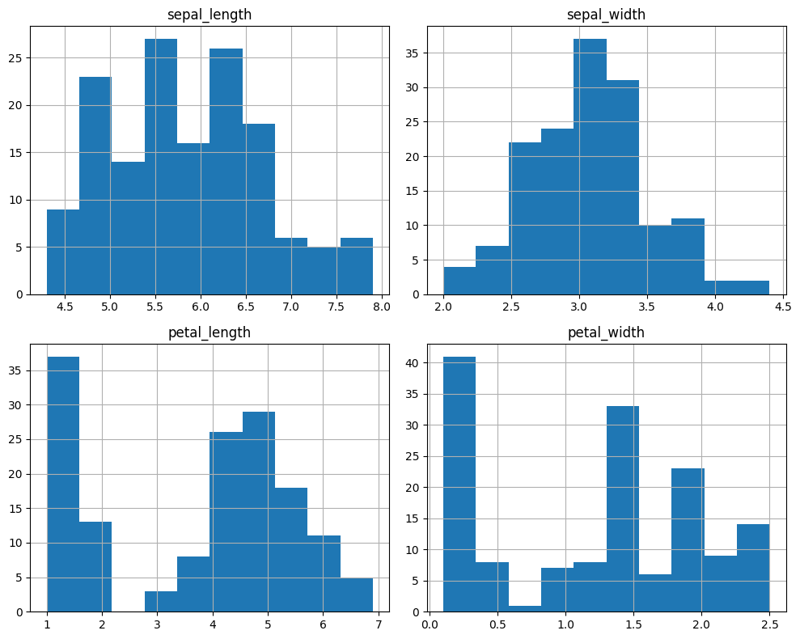
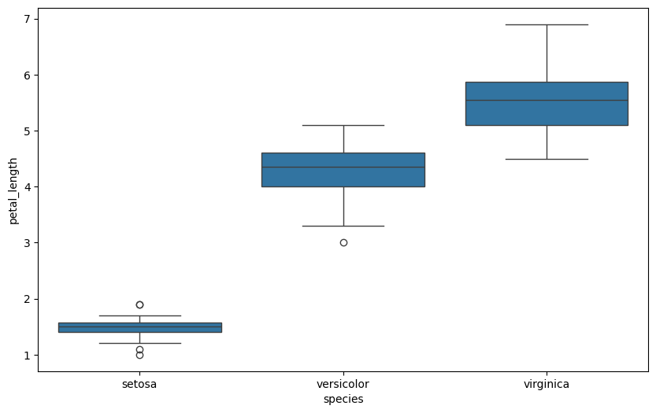
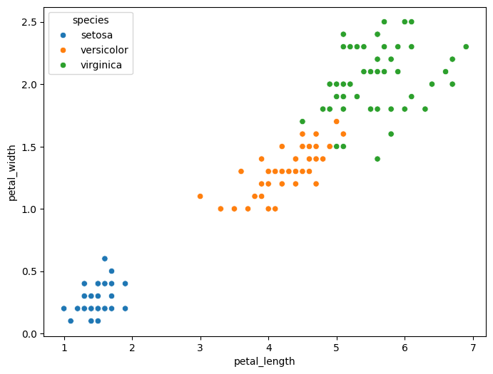
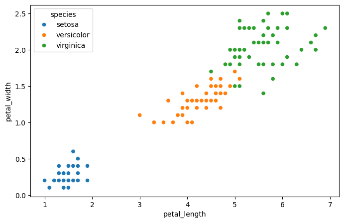
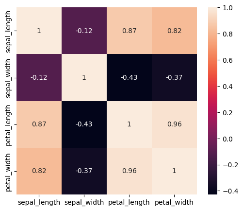
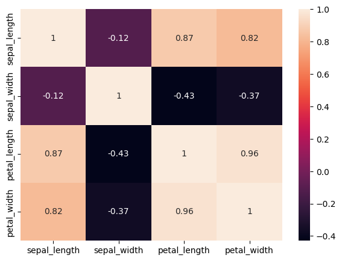

import pandas as pd
from sklearn.datasets import load_iris
iris = load_iris()
df = pd.DataFrame(iris.data, columns=[
"sepal_length","sepal_width","petal_length","petal_width"
])
df["species"] = pd.Series(iris.target).map({0:"setosa",1:"versicolor",2:"virginica"})
df.head()
| sepal_length | sepal_width | petal_length | petal_width | species | |
|---|---|---|---|---|---|
| 0 | 5.1 | 3.5 | 1.4 | 0.2 | setosa |
| 1 | 4.9 | 3.0 | 1.4 | 0.2 | setosa |
| 2 | 4.7 | 3.2 | 1.3 | 0.2 | setosa |
| 3 | 4.6 | 3.1 | 1.5 | 0.2 | setosa |
| 4 | 5.0 | 3.6 | 1.4 | 0.2 | setosa |
df.to_csv("../data/iris.csv", index=False)
df.shape
(150, 5)
df.info()
df.isna().sum()
<class 'pandas.DataFrame'>
RangeIndex: 150 entries, 0 to 149
Data columns (total 5 columns):
# Column Non-Null Count Dtype
--- ------ -------------- -----
0 sepal_length 150 non-null float64
1 sepal_width 150 non-null float64
2 petal_length 150 non-null float64
3 petal_width 150 non-null float64
4 species 150 non-null str
dtypes: float64(4), str(1)
memory usage: 6.0 KB
sepal_length 0
sepal_width 0
petal_length 0
petal_width 0
species 0
dtype: int64
df.sample(5)
| sepal_length | sepal_width | petal_length | petal_width | species | |
|---|---|---|---|---|---|
| 131 | 7.9 | 3.8 | 6.4 | 2.0 | virginica |
| 77 | 6.7 | 3.0 | 5.0 | 1.7 | versicolor |
| 94 | 5.6 | 2.7 | 4.2 | 1.3 | versicolor |
| 44 | 5.1 | 3.8 | 1.9 | 0.4 | setosa |
| 34 | 4.9 | 3.1 | 1.5 | 0.2 | setosa |
df["species"].value_counts()
species
setosa 50
versicolor 50
virginica 50
Name: count, dtype: int64
df.describe()
| sepal_length | sepal_width | petal_length | petal_width | |
|---|---|---|---|---|
| count | 150.000000 | 150.000000 | 150.000000 | 150.000000 |
| mean | 5.843333 | 3.057333 | 3.758000 | 1.199333 |
| std | 0.828066 | 0.435866 | 1.765298 | 0.762238 |
| min | 4.300000 | 2.000000 | 1.000000 | 0.100000 |
| 25% | 5.100000 | 2.800000 | 1.600000 | 0.300000 |
| 50% | 5.800000 | 3.000000 | 4.350000 | 1.300000 |
| 75% | 6.400000 | 3.300000 | 5.100000 | 1.800000 |
| max | 7.900000 | 4.400000 | 6.900000 | 2.500000 |
df.groupby("species").describe()
| sepal_length | sepal_width | ... | petal_length | petal_width | |||||||||||||||||
|---|---|---|---|---|---|---|---|---|---|---|---|---|---|---|---|---|---|---|---|---|---|
| count | mean | std | min | 25% | 50% | 75% | max | count | mean | ... | 75% | max | count | mean | std | min | 25% | 50% | 75% | max | |
| species | |||||||||||||||||||||
| setosa | 50.0 | 5.006 | 0.352490 | 4.3 | 4.800 | 5.0 | 5.2 | 5.8 | 50.0 | 3.428 | ... | 1.575 | 1.9 | 50.0 | 0.246 | 0.105386 | 0.1 | 0.2 | 0.2 | 0.3 | 0.6 |
| versicolor | 50.0 | 5.936 | 0.516171 | 4.9 | 5.600 | 5.9 | 6.3 | 7.0 | 50.0 | 2.770 | ... | 4.600 | 5.1 | 50.0 | 1.326 | 0.197753 | 1.0 | 1.2 | 1.3 | 1.5 | 1.8 |
| virginica | 50.0 | 6.588 | 0.635880 | 4.9 | 6.225 | 6.5 | 6.9 | 7.9 | 50.0 | 2.974 | ... | 5.875 | 6.9 | 50.0 | 2.026 | 0.274650 | 1.4 | 1.8 | 2.0 | 2.3 | 2.5 |
3 rows × 32 columns
df.groupby("species").mean(numeric_only=True)
| sepal_length | sepal_width | petal_length | petal_width | |
|---|---|---|---|---|
| species | ||||
| setosa | 5.006 | 3.428 | 1.462 | 0.246 |
| versicolor | 5.936 | 2.770 | 4.260 | 1.326 |
| virginica | 6.588 | 2.974 | 5.552 | 2.026 |
import matplotlib.pyplot as plt
import seaborn as sns
df[["sepal_length","sepal_width","petal_length","petal_width"]].hist(figsize=(10,8))
plt.tight_layout()
plt.show()

plt.figure(figsize=(10,6))
sns.boxplot(data=df, x="species", y="petal_length")
plt.show()

plt.figure(figsize=(8,6))
sns.scatterplot(data=df, x="petal_length", y="petal_width", hue="species")
plt.show()

df.drop(columns=["species"]).hist(figsize=(10,8))
plt.tight_layout()
plt.show()
plt.figure(figsize=(8,5))
sns.scatterplot(data=df, x="petal_length", y="petal_width", hue="species")
plt.show()

plt.figure(figsize=(6,5))
sns.heatmap(df.drop(columns=["species"]).corr(), annot=True)
plt.show()

sns.pairplot(df, hue="species")
plt.show()

plt.figure(figsize=(7,5))
sns.heatmap(df.drop(columns=["species"]).corr(), annot=True)
plt.show()

import sys
!{sys.executable} -m pip install -U mysql-connector-python
Requirement already satisfied: mysql-connector-python in /usr/local/python/3.12.1/lib/python3.12/site-packages (9.6.0)
import mysql.connector
print("OK")
OK
import pandas as pd
from scipy import stats
# Membaca data
df = pd.read_csv("../data/IRIS.csv", usecols=[0])
df.columns = ['sepal_length']
# Statistik deskriptif
print("Jumlah data :", df['sepal_length'].count())
print("Rata-rata :", df['sepal_length'].mean())
print("Nilai minimum :", df['sepal_length'].min())
print("Q1 :", df['sepal_length'].quantile(0.25))
print("Median (Q2) :", df['sepal_length'].quantile(0.5))
print("Q3 :", df['sepal_length'].quantile(0.75))
print("Nilai maksimum :", df['sepal_length'].max())
# Modus
mode = stats.mode(df['sepal_length'], keepdims=True)
print("Modus :", mode.mode[0])
print("Frekuensi modus :", mode.count[0])
# Variasi data
print("Standar deviasi :", df['sepal_length'].std())
print("Variansi :", df['sepal_length'].var())
Jumlah data : 150
Rata-rata : 5.843333333333334
Nilai minimum : 4.3
Q1 : 5.1
Median (Q2) : 5.8
Q3 : 6.4
Nilai maksimum : 7.9
Modus : 5.0
Frekuensi modus : 10
Standar deviasi : 0.828066127977863
Variansi : 0.6856935123042507